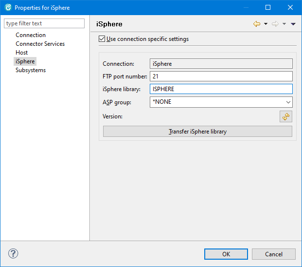

But sometimes it might be helpful to specify a different library for a certain connection. Right click a connection on the Remote System view and select "Properties -> iSphere" to set connection specific properties or to transfer the iSphere library:

The available options are:
| Use connection specific settings | - | Specifies whether or not to use connection specific settings. |
| Connection | - | Displays the name of the Remote Systems connection that is used for uploading the iSphere library. |
| FTP port number | - | Specifies the FTP port number for uploading the iSphere library. |
| iSphere library | - | Specifies the the name of the iSphere library that you want to use on your server. |
| Version | - | Displays the version of your iSphere library on the host. Use the refresh button to retrieve the version of the iSphere library. Once pressed, the version is automatically updated as the library name changes. |
| Transfer iSphere Library | - | Use the [Transfer iSphere Library] button to upload the iSphere library to your host. |